Seat Covers/Cushions - Replacement Procedures
August 19, 1991BULLETIN NO.
91-041
YEAR
1991
MODEL
NSX
VIN APPLICATION
ALL
Replacement Seat Covers/Cushions
Use the following procedure to install replacement seat cover/cushion assemblies.
Seat Removal
Slide the seat fully forward, then remove the two rear mounting bolts. Slide the seat fully rearward, then remove the two front mounting bolts. Remove the lower seat belt anchor bolt. Adjust the seat back to full recline, disconnect the seat wire harness, then remove the seat.
Seat Back Replacement
1. Place the seat on a clean, smooth surface with the headrest down and the white plastic seat back cover facing up.
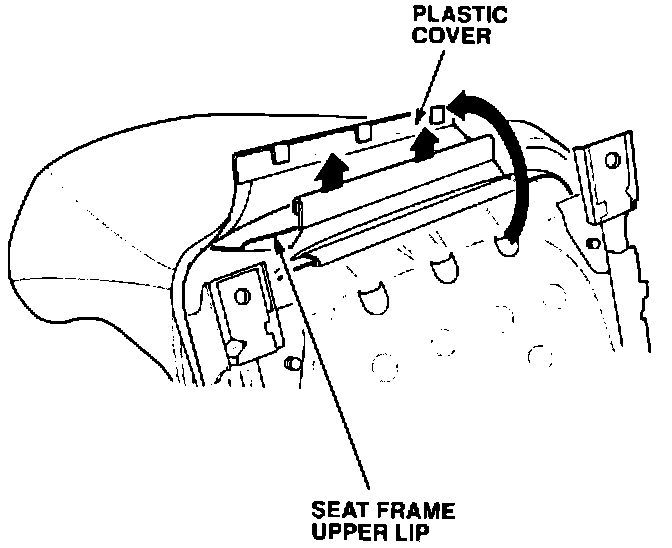
2. Release the white plastic cover to expose another white plastic cover attached to the upper lip of the seat frame. Remove this plastic cover from the seat back frame.
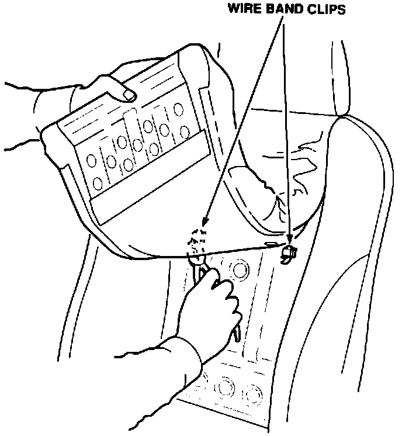
3. Pull the seat back cushion up and cut the two wire band clips.
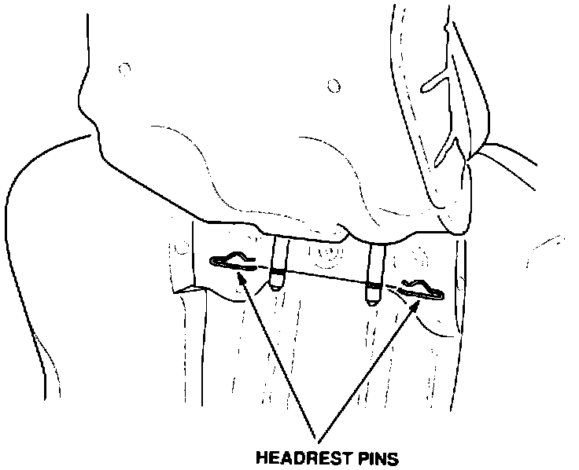
4. Remove the two headrest pins, then remove the headrest.
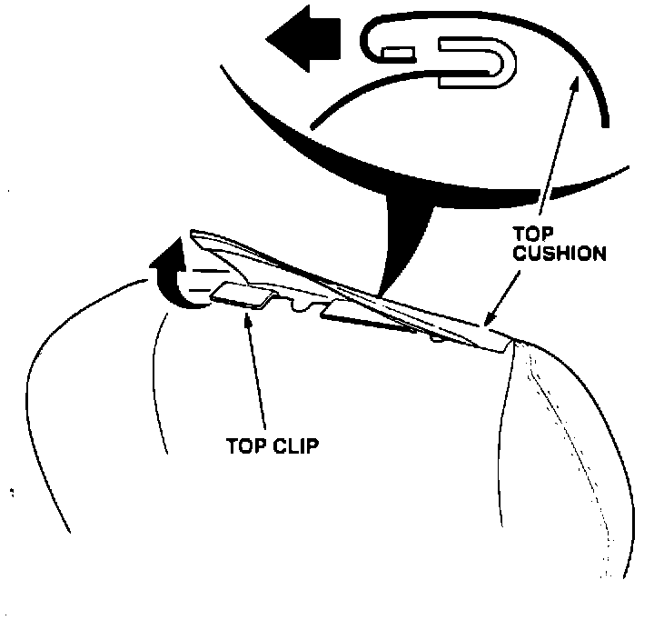
5. Release the seat back cushion top clips and remove the seat back cushion.
6. Install a new seat back cushion using new headrest pins and wire band clips.
Seat Bottom Cushion Replacement
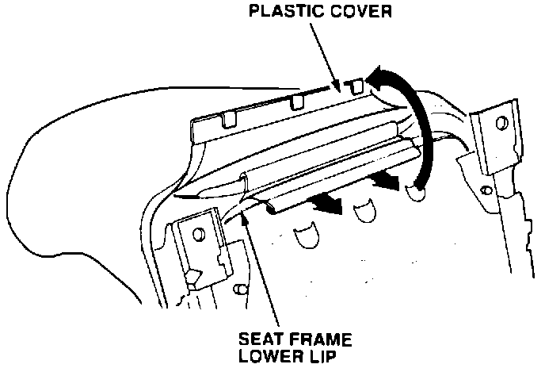
1. Release the white plastic cover to expose another white plastic cover attached to the lower lip of the seat frame. Remove this plastic cover from the seat back frame.
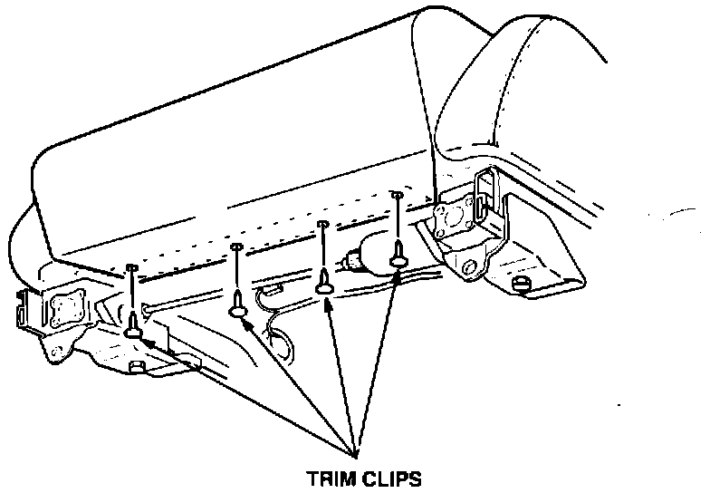
2. Remove the four trim clips from the front of the bottom seat cushion.
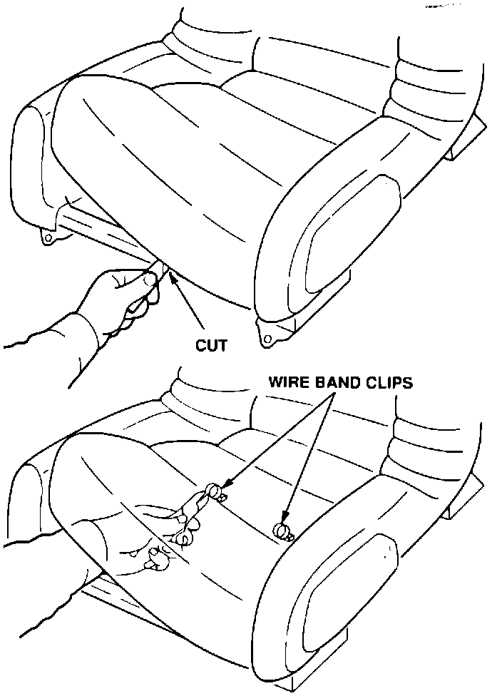
3. Pull the seat bottom cushion up and use a razor blade to cut the seat foam where it is glued to the seal frame. Locate and cut the two wire band clips, then remove the seat bottom cushion.
4. Install a new seat bottom cushion using new wire band clips and trim clips. Glue the seat bottom to the frame so the bottom cushion will not move around.
Seat Back/Bolster Replacement
1. Remove the seat back cushion and seat bottom cushion as described previously.
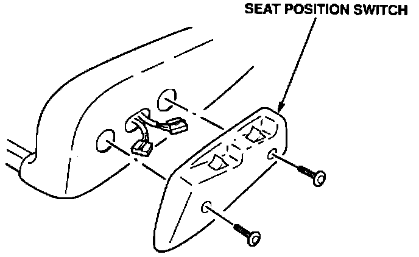
2. Remove the seat position switch and disconnect the connectors.
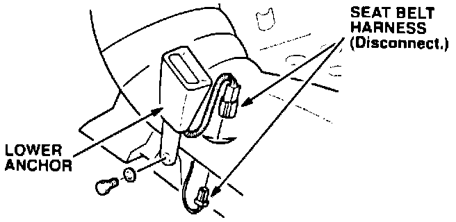
3. Remove the lower anchor and disconnect the seat belt harness (driver's side only).
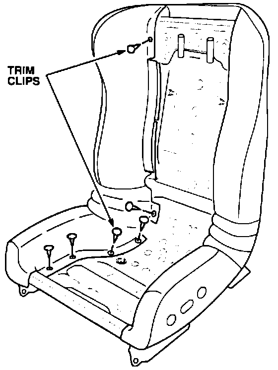
4. Remove the trim clips along the inside of the bottom bolster (6 each side).
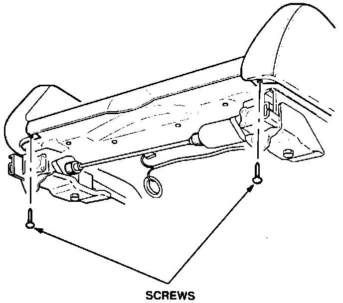
5. Remove the 2 screws at the front of the seat (1 each side).
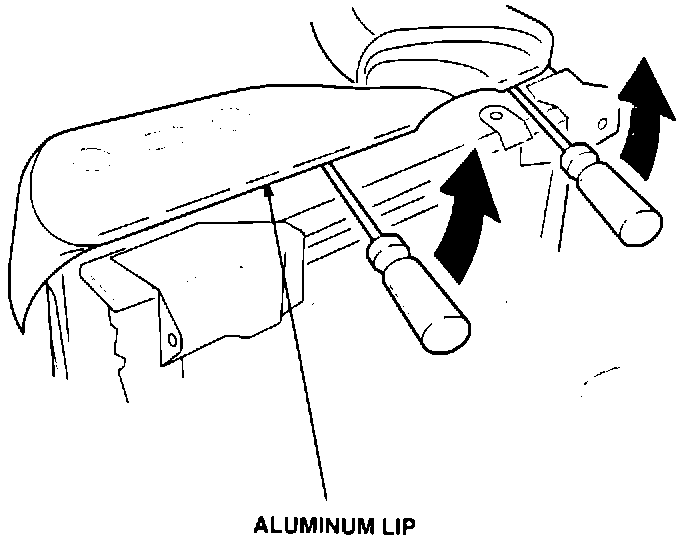
6. Pry up on the aluminum lip on each side of the seat and release the bottom bolster. Remove the seat back/bolster.
7. Install the new seat back/bolster. Work from the top down using new trim clips. Use a plastic hammer to bend the aluminum lip back into place.
8. Reinstall the seat position switch and connect the seat belt harness. Reinstall the lower anchor and torque the bolt to 32 N-m (3.2 kg-m. 23 lb.ft.)
Seat Installation Reinstall the seat and torque the mounting bolts to 40 N-m (4.0 kg-m, 29 lb.ft.)
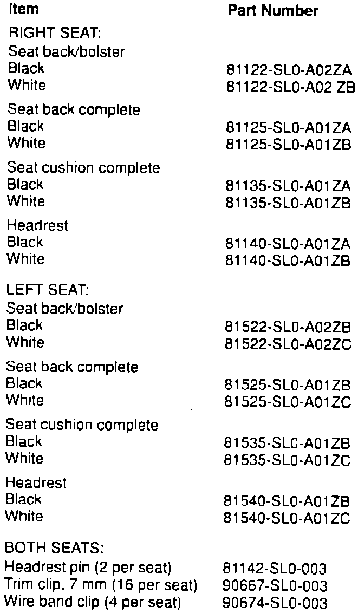
PARTS INFORMATION
WARRANTY CLAIM INFORMATION
In warranty:
The normal warranty applies.
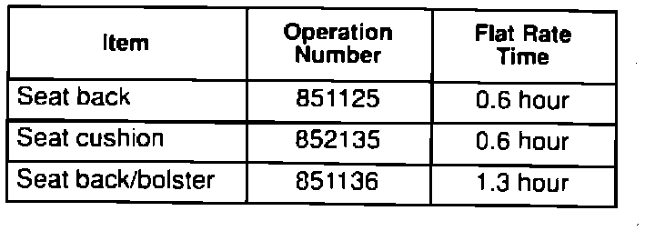
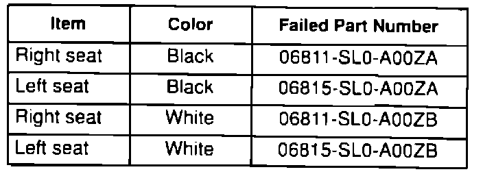
Out-of-warranty:
Any repair performed after warranty expiration may be eligible for goodwill consideration by the District Service Manager. You must request consideration, and get the DSM's decision, before starting work.
Defect code: 021
Contention code: A01